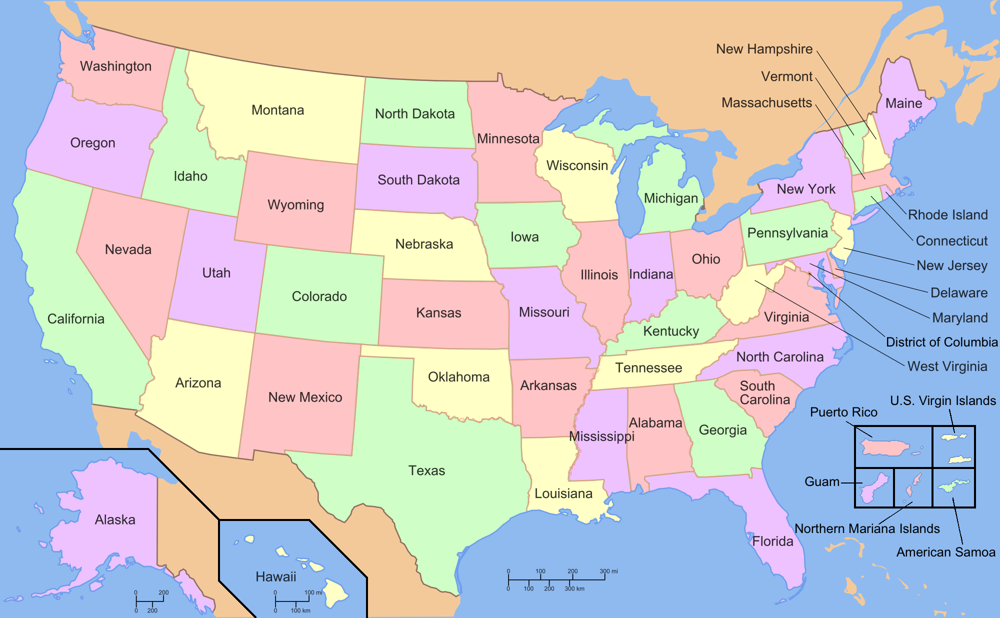
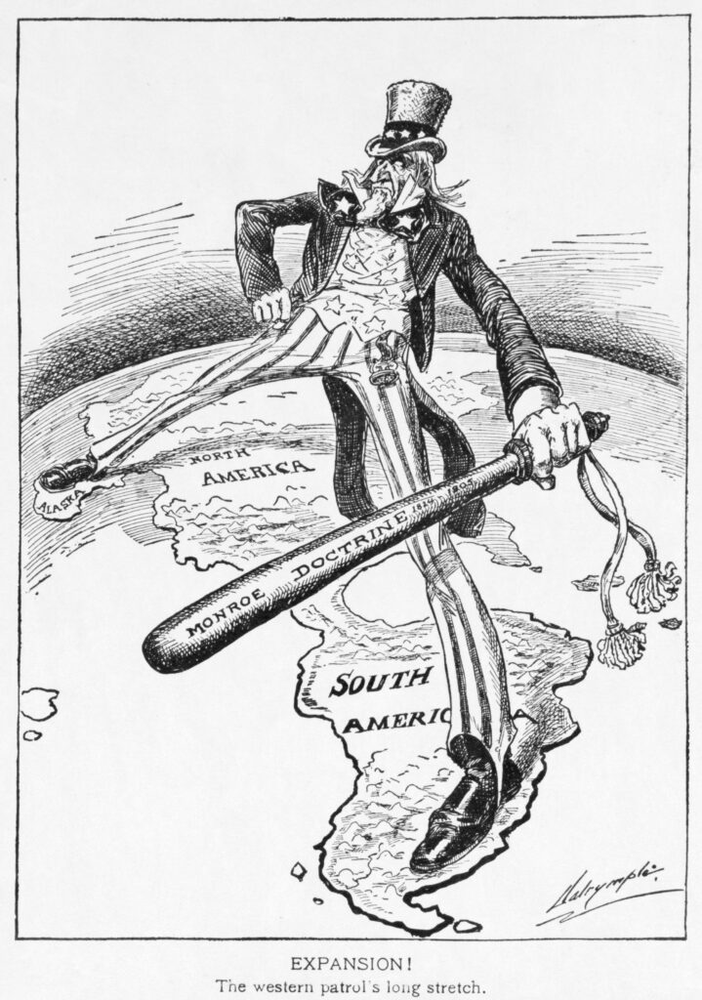
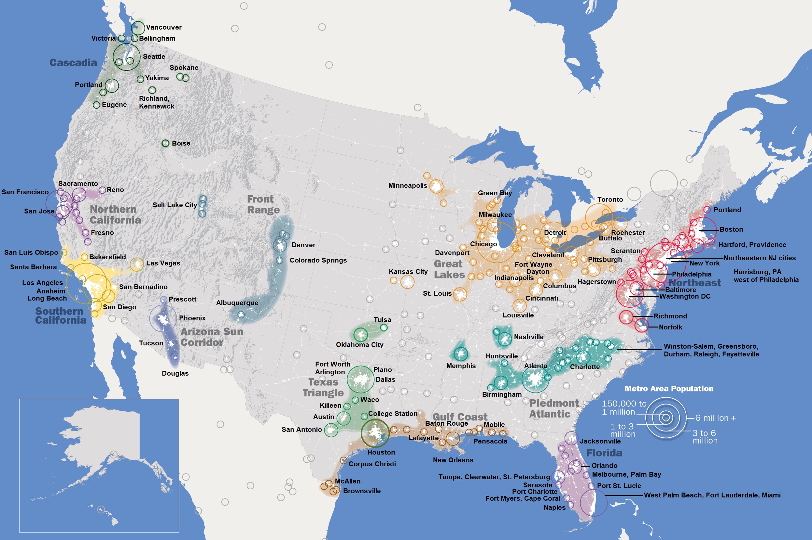
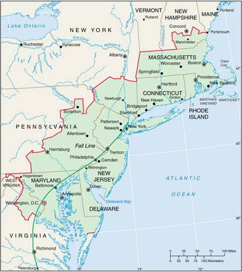
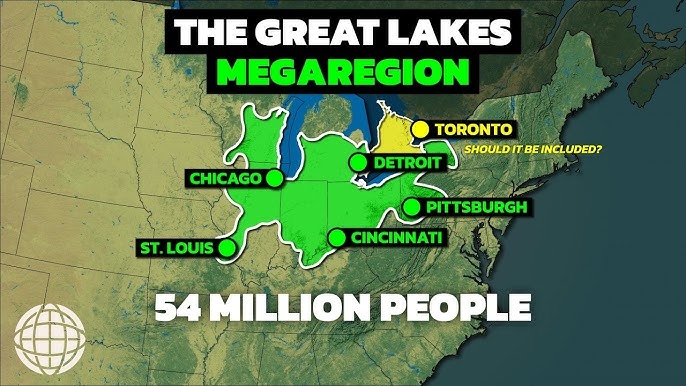
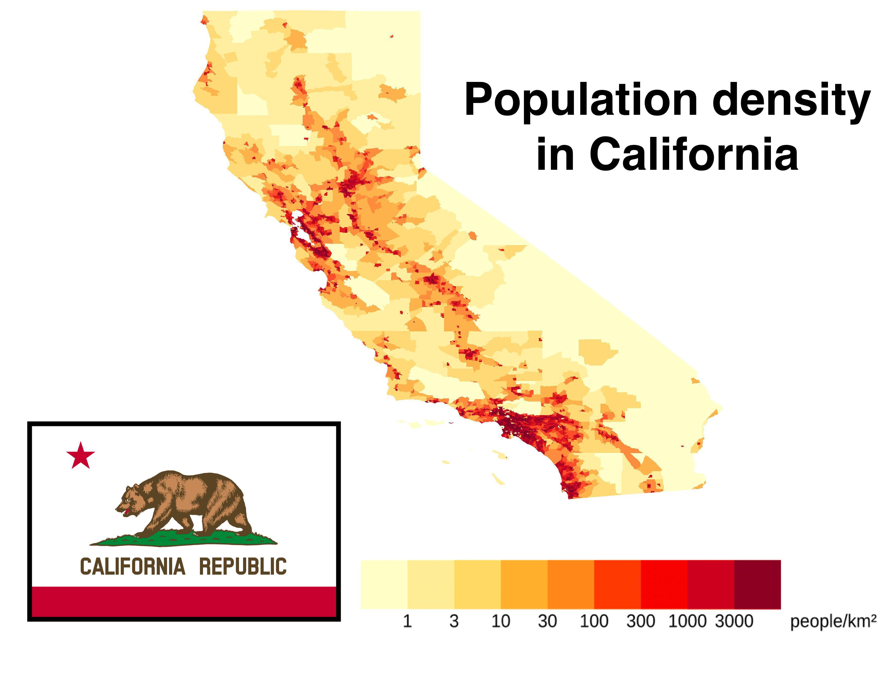

Статистичний профіль
| ВВП (Номінал): | $27.9 трлн |
| Населення: | 335.8 млн |
| Площа: | 9.8 млн км² |
| ВВП на душу: | $83,060 |
| Урбанізація: | 83.3% |
Тренд зростання ВВП
Політична система
США є однією з перших демократій світу. Ключовий принцип — розподіл влади та «стримування і противаги». Вибори Президента відбуваються через двоступеневу систему «колегії виборщиків».

Демократи

Республіканці
Країна мігрантів
США — це « нація націй ».Вся історія хвиль міграції показує, як кожна група приносила свій капітал та культуру, формуючи сучасну потужність держави.

J.F. Kennedy
«A Nation of Immigrants»
Геополітика
Концепція «світового поліцейського» та доктрина Монро. США утримують понад 800 баз у 70 країнах світу для захисту глобальної торгівлі та демократичних цінностей.

Доктрина МонроСистема розселення: Мегалополіси

Урбаністичний каркас
Понад 83% населення США проживає в містах. Мегалополіси утворюють основні осі розселення, де густота населення в десятки разів перевищує середню по країні.

Приатлантичний
Нью-Йорк • Вашингтон • Філадельфія
Головний фінансовий та урядовий коридор світу. Понад 50 млн мешканців.

Приозерний
Чикаго • Детройт • Піттсбург
Традиційне індустріальне ядро (металургія, автопром) США навколо Великих озер.

Каліфорнійський
Лос-Анджелес • Сан-Франциско
Світовий центр High-Tech та аерокосмічної індустрії. Найдинамічніший мегалополіс.
Демографічна мозаїка
Етнічний склад
Вікова структура
Релігія
Центр інновацій
«Кремнієва долина» — це унікальна синергія топових університетів (Stanford, Berkeley) та необмеженого венчурного капіталу. Тут формується технологічний порядок денний всього світу.
Технологічна перевага
ВВП Каліфорнії випереджає більшість розвинених країн світу, роблячи штат де-факто п'ятою економікою планети.
Науковий капітал
США стабільно утримують лідерство за кількістю патентів, високотехнологічним експортом та концентрацією Нобелівських лауреатів.